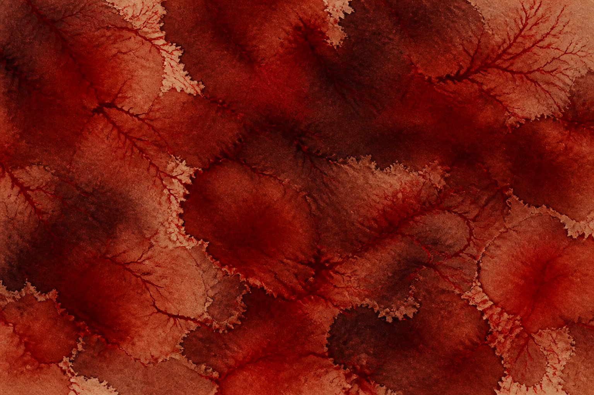
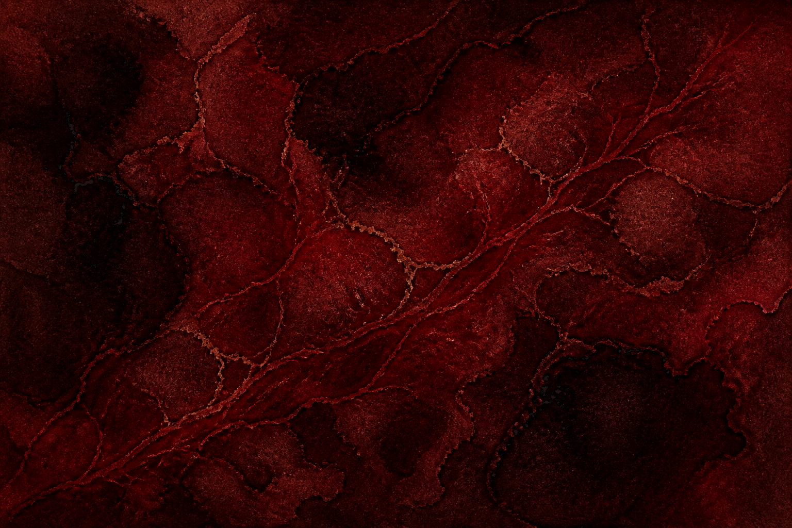
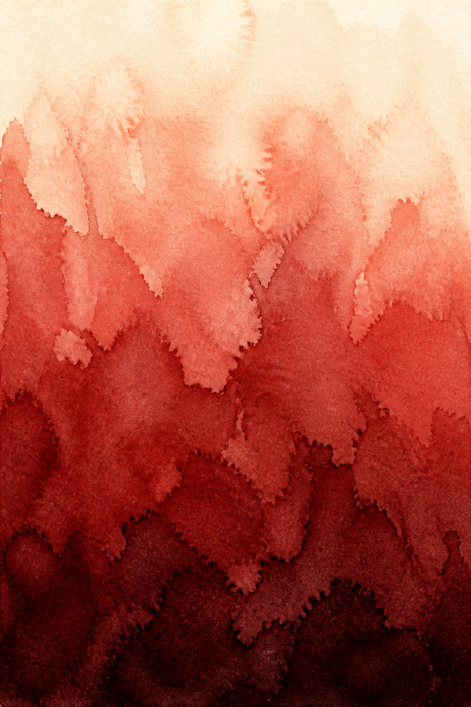
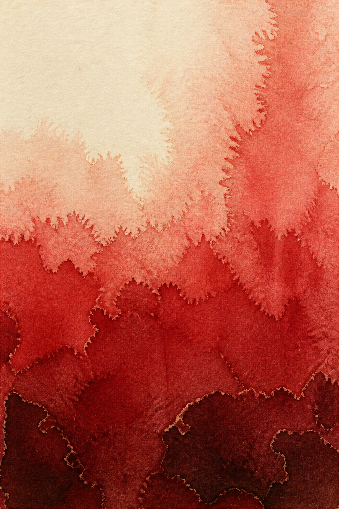
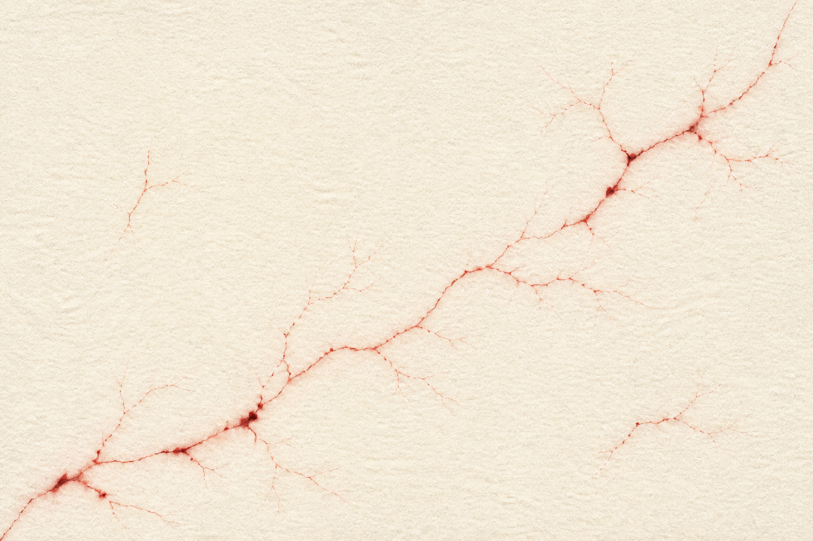

Five watercolor fields generated against the six pigments. Each is shown raw, then composited over Deep Brown-Red at four strengths using the same screen blend the Work page uses. The gallery currently runs at 22%.


Tall field: paper at the top reaching deep brown-red at the bottom. For direction 11.


Filaments alone on pale paper, almost no wash. Could carry a paper section rather than the gallery.
